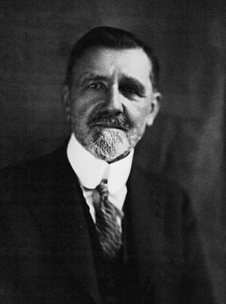

1871–1956
French
Measure theory, probability, game theory
Émile Borel was born in Saint-Affrique in southern France. A prodigy, he entered the École Normale Supérieure at sixteen and completed his doctorate at twenty-two. He held a chair at the Sorbonne from 1909, where he built the French school of probability and measure theory. He was also a politician, serving in the French parliament and briefly as Minister of the Navy.
Borel's mathematical contributions span an extraordinary range. In 1895, he introduced the concept of countable open covers and proved what is now called the Heine–Borel theorem: a subset of $\mathbb{R}^n$ is compact if and only if it is closed and bounded. This result, which gave the first rigorous characterisation of compactness in Euclidean space, became a pillar of analysis and topology.
In probability, Borel was a pioneer. His 1909 paper on normal numbers contained what is now the first Borel–Cantelli lemma and an early version of the strong law of large numbers. The second Borel–Cantelli lemma (for independent events) was proved by Francesco Cantelli in 1917. Together, the two lemmas are the workhorses of almost-sure convergence arguments.
Borel also anticipated game theory. In 1921 he proved a minimax theorem for games with finitely many pure strategies, seven years before von Neumann's general theorem. His 1924–1927 papers on strategic games introduced mixed strategies and the concept of bluffing. He later served in the French Resistance during the Second World War, was imprisoned by the Vichy regime, and received the Croix de Guerre and the Médaille de la Résistance. He died in Paris in 1956, aged eighty-four.
| Phase | Page | Referenced for |
|---|---|---|
| Phase 3 | Integrability and Properties | Heine–Borel theorem used in Riemann integrability proof |
| Phase 8 | The Poincaré-Bendixson Theorem | Compactness via Heine–Borel |
| Phase 9 | Compactness | Heine–Borel theorem: statement, proof, historical context (1895) |
| Phase 9 | Continuity on Compact Sets | Heine–Borel used for image compactness |
| Phase 9 | Baire Category and Arzelà–Ascoli | Heine–Borel: closed and bounded implies compact in $\mathbb{R}^n$ |
| Phase 12 | The Law of Large Numbers | Borel–Cantelli lemma (first and second) |
| Phase 12 | The Law of Large Numbers | Borel proved strong LLN for fair coin (1909) |
| Phase 14 | Norms and Equivalence in Finite Dimension | Heine–Borel for norm equivalence proof |
| Phase 14 | Riesz's Lemma and Finite-Dimensional Characterisation | Heine–Borel: compact unit ball characterises finite dimension |
| Phase 15 | Combinatorial Games | Borel games and determinacy |
| Phase 15 | Zero-Sum Games and the Minimax Theorem | Compactness via Heine–Borel in minimax proof |